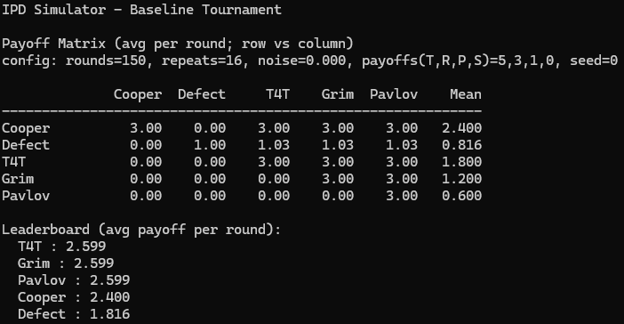

Prisoner’s Dilemma Simulator
A modular C++ simulator for iterated Prisoner’s Dilemma tournaments, noise sweeps, exploiter tests, evolutionary dynamics, and strategic complexity analysis.

Overview
This project is a fully featured Iterated Prisoner’s Dilemma simulator built in C++ for advanced programming coursework. It was designed not just to run basic repeated matches, but to support a complete experimental workflow: configurable tournaments, strategy comparison, implementation noise sweeps, exploiter testing, evolutionary tournaments, and strategic complexity penalties inside fitness calculations. The final submission was assessed as an outstanding, professional-quality implementation that fully satisfied the coursework requirements.
My Role
I designed and implemented the simulator architecture, command-line interface, match engine, strategy system, experiment runners, statistics pipeline, and analysis outputs. I also documented the project’s development process in detailed implementation notes, from defining the minimal domain model and strategy interface through to tournament runners, reactive strategies, noise support, and evolutionary features.
Core Features
- Modular Strategy System: Strategies are plug-in modules implementing a shared interface, allowing deterministic and stochastic strategies to be added cleanly.
- Tournament Engine: The simulator supports repeated Prisoner’s Dilemma matches with configurable rounds, repetitions, seat order, and payoff matrices.
- Unified CLI: The command line supports strategies, rounds, repeats, seed, noise, payoff customization, sweeps, exploiter tests, evolutionary mode, SCB, output format, and file export.
- Readable and Exportable Output: Results can be printed in text form or exported as CSV, with ranked summaries and statistical reporting.
- Statistical Reporting: The submission includes means and 95% confidence intervals to support stronger interpretation of outcomes.
Strategies & Architecture
The project uses a clean object-oriented strategy model. Baseline and advanced strategies include ALLC, ALLD, TFT, GRIM, PAVLOV, CTFT, PROBER, and random variants. The feedback specifically praised the use of polymorphism through a Strategy interface, cloned instances per seat, smart pointers for resource safety, and a tidy separation between CLI parsing, strategy construction, match logic, statistics, and experiment drivers.
My implementation notes also show the project growing from a small vocabulary of game-domain types into a reusable architecture with per-match reset hooks, seat-aware strategy perspective, Tit-for-Tat support, and round-robin tournament helpers.
Experimental Work
- Q1 — Baseline Tournament: A configurable round-robin across core strategies such as ALLC, ALLD, TFT, GRIM, and PAVLOV, with payoff matrix and leaderboard reporting.
- Q2 — Reciprocity Under Noise: Implementation noise flips moves with probability ε, with sweep experiments across multiple noise levels for TFT, GRIM, PAVLOV, and CTFT.
- Q3 — Robustness to Exploiters: Explicit experiments for PROBER vs ALLC, PROBER vs TFT, and mixed populations including ALLD, both with and without noise.
- Q4 — Evolutionary Tournament: Population updates based on strategy fitness across generations, including mutation and generation-by-generation trajectory output.
- Q5 — Strategic Complexity Budget: Complexity costs are subtracted from raw fitness, enabling direct comparison of evolutionary outcomes with and without SCB.
Technical Focus
A major strength of the project is that it combines strong software design with actual experimental usability. The CLI is not an afterthought: it is the main interface for reproducing results, rerunning experiments, exporting CSV, and testing different strategic populations. The grading feedback specifically highlighted this unified CLI as one of the strongest parts of the submission.
On the code side, the coursework materials also point to effective use of templates for statistical calculations, operator overloading for result formatting, modern resource management with std::unique_ptr, and a modular separation between engine, parsing, and reporting systems.
Analytical Findings
The experiments were used to study when cooperation survives, when strict reciprocity collapses, and how exploitative or noise-tolerant strategies behave under different tournament conditions. In the baseline tournament, reciprocal strategies such as TFT and GRIM were strong in noise-free environments; under noise, more forgiving or repair-oriented strategies such as CTFT and PAVLOV became more resilient. PROBER heavily exploited ALLC but was contained by retaliatory strategies, while the Strategic Complexity Budget shifted evolutionary outcomes toward simpler strategies when complexity costs were applied.
Outcome
This is one of the strongest technical projects in my portfolio because it demonstrates both software engineering discipline and experimental reasoning. It is not just a simulation that runs — it is a reusable analytical tool with a professional command-line workflow, modular strategy model, reproducible experiment structure, and clear interpretation of results. The final feedback described it as a high-quality, comprehensive implementation that reflects excellent C++ practice and a strong grasp of game-theoretic analysis.